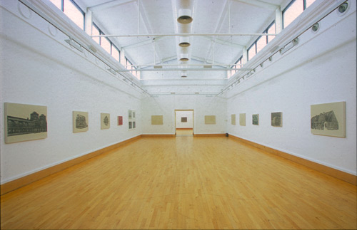
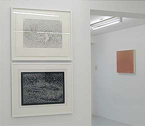
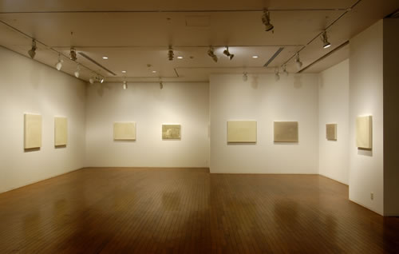

home
Re-Natured 2019 -2020
Model Series 2011 - 2014
Evidence of Doubt 2011 - 2013
Regeneration 2006 - 2010
Under False Colours 2004
Works 1996 - 2000
contact
biography
Under False Colours 2004 Djanogly Art Gallery, Nottingham,
U.K. May 15th - June 27th 2004. Under False Colours consisted of 31 works (27 paintings and a suite of 4 prints) which form the Warplane Series and Camouflage Series.
 Under False Colours 2004, Djanogly Art Gallery, Nottingham, UK (The paintings) ..."pose questions about truth and reality: about appearance and authenticity. Implicit in Dixon's work is the question of whether what is partial and what is disguised can ever reveal something that is true." Sue Hubbard. The Independent, Monday 21st March, 2005  Under False Colours 2004, Tokyo Gallery, Japan  Under False Colours 2004, Yokohama Portside Gallery, Japan The Camouflage Suite - (three etchings and one silkscreen) was selected for the British Section at the Ljubljana International Graphic Biennial, Ljubljana, Slovenia. June 23rd - October 2nd 2005
|